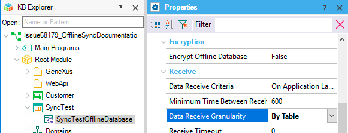
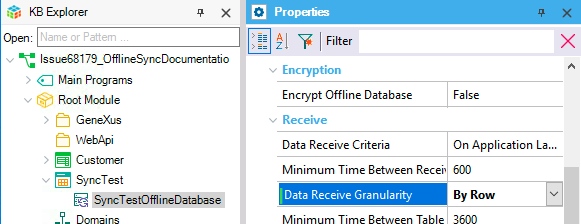
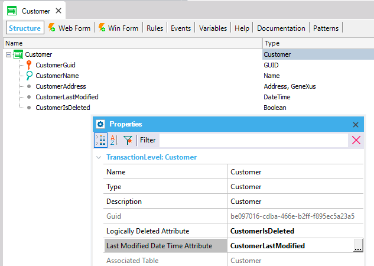

This article explains the different alternatives when using offline synchronization in the context of Offline Native Mobile applications architecture, given by the receive granularity criteria. In this context, the developer has two main options for synchronizing table's data from the server-side to the device (client-side): by table or by row. For this last option, there are also two flavors: by hash or by timestamp. For simplicity, we'll refer to "rows" for those rows that satisfy the Offline Database Object conditions. Synchronization by tableFor each table involved in the synchronization, if the table was changed, it sends all table records from the server to the device. On the device, for each table: if the table was modified, first all table records are deleted on the device, and then all the new values retrieved from the server are saved. If a table has not changed since the last synchronization, then nothing happens. This mechanism significantly decreases the processing needed in the server (because there is no need to compare the table's records), but the data transfer may increase severely. HowToTo enable the synchronization by table mechanism, select the value "By Table" in the Offline Database object's Data Receive Granularity property.  ProsThis algorithm is useful when the system has few rows in the table or on every synchronization the device must bring a high quantity of rows. This solution avoids the expensive calculation of hashes for each row. ConsUsing this solution when few rows change, always transfers all of them unnecessarily. Synchronization by row using hashesFor each table involved in the synchronization, if the table was changed, it sends only the modified rows (inserted, updated or deleted) from the server to the device. Differences are computed by using row hashes. To be able to use this mechanism, GeneXus needs to create some auxiliary tables in the server and to compute the MD5 hashes of the existing records in order to be able to find out new, updated, and deleted records. This requires more processing in the server, but may significantly decrease the data traffic. HowToTo enable the synchronization by row using hashes mechanism, select the value "By Row" (default) in the Offline Database object's Data Receive Granularity property.  The algorithmThe synchronization by hash algorithm works as follows (for each table, on each device):
ProsThis algorithm has several advantages when compared to other possible solutions. One of the main reasons to implement it this way was to avoid the modification of the model’s tables. By computing a hash and storing it outside of the Knowledge Base’s data model, there is no need to modify existing tables. Another strong point in this algorithm is that it works regardless of how the modifications are made to the database. The hashes are computed at the moment the synchronization is performed, essentially using a snapshot of the current state of the database. How the database came to be in that state is irrelevant. ConsThe main drawback of this algorithm is the performance when the datasets are too large. Especially when modifications are rare or synchronizations are very frequent. This is because on each synchronization the hashes of each row have to be computed on the new dataset. This operation may be time-consuming, and so it may not be the ideal solution in all scenarios. Synchronization by row using timestampsThe synchronization by timestamp algorithm uses a different approach. It still synchronizes by row, but it does not use hashes to compute the differences. For this reason, the algorithm requires the addition of two attributes: the Last Modified Date Time attribute and the Logically Deleted attribute. This algorithm can be applied on a per-table basis. Some tables may use synchronization by timestamp algorithm while others use the synchronization by hashes algorithm. HowToTo enable the synchronization by row using timestamps mechanism, you first need to select the value "By Row" (default) in the Offline Database object's Data Receive Granularity property. Additionally, for each table you want to synchronize by timestamp, you need to indicate the Last Modified Date Time and the Logically Deleted attributes on the Transaction's level properties as shown below.  The algorithm
ConsiderationsNote that the algorithm uses a "modification timestamp", that needs to be updated every time there is a modification. This action is the developer’s responsibility, if the record is modified without updating this value, the algorithm won’t synchronize it. Also, deletes need to be logical. If a record is physically deleted from the table, the algorithm won’t find it and it won’t be deleted on the devices. The developer is also responsible for prohibiting deletes and managing them logically instead. LimitationsAttributes managed by the developerThe attributes defined in theLogically Deleted Attribute property and Last Modified Date Time Attribute property are managed by the developer. If they are not correctly maintained, the algorithm will not work as expected. Deletes need to be logicalThe algorithm does not keep track of deleted rows, as does the synchronization by hash algorithm. In that way, if a record is deleted from the table, the information will be lost and the delete will never be performed on the device. Referenced tablesThere are some tables that are synchronized because they are referenced by a foreign key on another table. These tables cannot use the synchronization by timestamp algorithm. Conditions that change without modifying the recordThe referenced tables limitation is actually a special case of tables with records’ conditions that depend on information not contained in the table being synchronized. It is not the only case though. Notes
See also
|
| Backlinks |
| Data Receive Granularity property |
| KB:Sales |